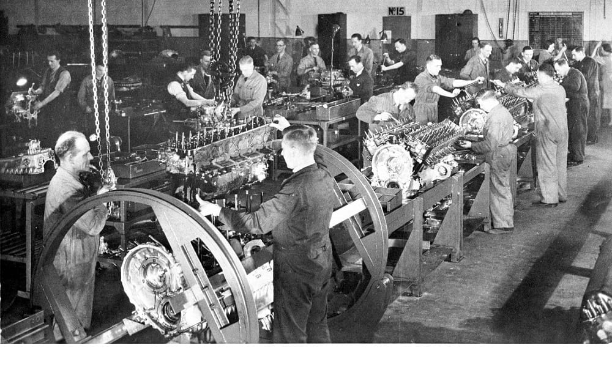

1ª Revolução Industrial (século XVIII)
Caracteriza pelas maquinas a vapor, fazendo que a produçao manual seja substituída pela maquinofatura, com isso começam a imigrar pessoas do campo para cidades a chamada Exodo Rural.
Antes: A produção era manual, artesanal e em pequena escala.
2ª Revolução Industrial (final do século XIX - início do XX)
Foco em produção em massa, o dominio do Aço e a Ultilizaçao do Petroleo.
Antes: Fábricas pequenas e energia a vapor.
3ª Revolução Industrial (a partir da segunda metade do século XX)
Era da automação, tecnologia da informação e globalização.
Antes: Produção em massa, mas com processos mais manuais.
Primeira Revolução
Diferenças principais
Energia usada
1ª: O uso do vapor.
2ª: Eletricidade e petróleo.
3ª: Eletrônica e energia renovável.
Tecnologia dominante
1ª: Máquinas mecânicas.
2ª: Motores e linhas de montagem.
3ª: Computadores e internet.
Forma de produção
1ª: Artesanal para mecanizada.
2ª: Produção em massa.
3ª: Produção automatizada e digital.
É a integração de tecnologias como inteligência artificial (IA), robôs, internet das coisas (IoT)
Aplicação em fábricas inteligentes, casas conectadas e cidades inteligentes.
O principal paradigma é a integração total entre o físico, o digital e o biológico.
Substituição de tarefas repetitivas: Trabalhadores em atividades manuais ou administrativas podem ser substituídos por máquinas ou IA.
A 5ª Revolução Industrial ?
está em discussão, mas ainda não é totalmente definida. Ela seria uma evolução da 4ª Revolução Industrial, que é marcada pela automação, inteligência artificial e digitalização.
A 5ª Revolução se diferencia porque busca integrar a tecnologia de maneira mais humana e sustentável. Isso inclui tecnologias que trabalham ao lado das pessoas, soluções personalizadas e um foco maior na sustentabilidade e no bem-estar.
5ª Revolução Industrial Em Empresas
algumas empresas já estão adotando práticas que podem ser associadas à 5ª Revolução Industrial, embora o conceito ainda esteja em desenvolvimento, Segue abaixo algumas empresas que já adotam práticas da 5ª Revolução Industrial